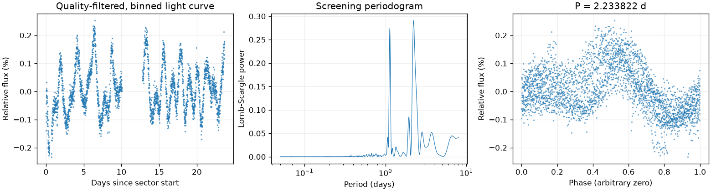
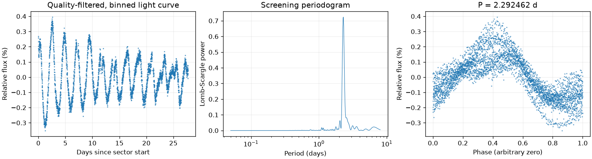
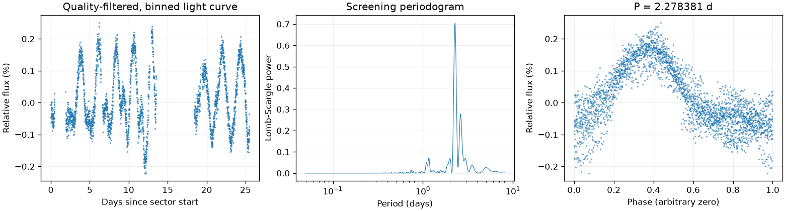
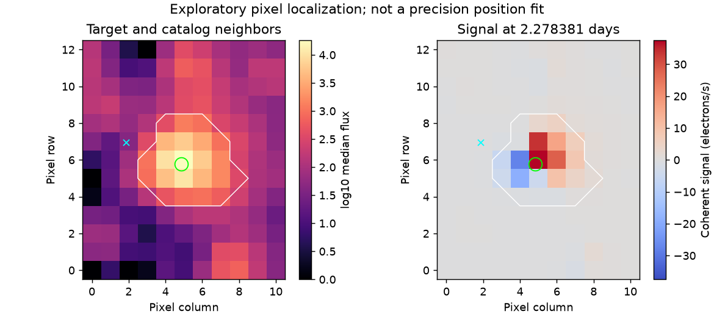

Sector 18 · 2.233822 天
相对幅度估计 0.1948% · 有效点数 14687

Screening peak only; no correlated-noise false-alarm calibration or physical classification.
这是筛选报告，未确认新发现，也不能代替 VSX 提交材料。
图中依次为亮度随时间变化、候选周期强度和折叠后的重复形状。相位零点仅供展示；纵轴是相对通量，不是标定星等。
相对幅度估计 0.1948% · 有效点数 14687

Screening peak only; no correlated-noise false-alarm calibration or physical classification.
相对幅度估计 0.2940% · 有效点数 19329

Screening peak only; no correlated-noise false-alarm calibration or physical classification.
相对幅度估计 0.2299% · 有效点数 13186

Screening peak only; no correlated-noise false-alarm calibration or physical classification.

像素峰值诊断不能替代精细来源拟合或正式查找星图。
{
"ra_deg": 49.2051733519206,
"dec_deg": 42.4961281217136,
"catalog_queries": [
{
"source": "VSX",
"status": "historical_snapshot",
"checked_at": "2026-11-09",
"note": "Archived neighborhood query only; identity and novelty not fully reviewed."
}
],
"vsx_neighbors": [
{
"Name": "Gaia DR3 239710134906872320",
"RA2000": "49.22874",
"Declination2000": "42.49315",
"ProperMotionRA": "-2.1070",
"ProperMotionDec": "-3.7490",
"VariabilityType": "E",
"Period": "0.264634",
"MaxMag": "16.87 G",
"MinMag": "17.35 G",
"SpectralType": "K",
"Discoverer": "Gaia collaboration",
"Category": "Variable",
"OID": "2878335",
"Constellation": "Per",
"sep_arcsec": 63.46801059355769
}
],
"notes": [
{
"kind": "unresolved_prior_work_lead",
"recorded_at": "2026-11-09",
"url": "https://portal.nersc.gov/project/m2218/tess-l8/tic.html?tic=458747716",
"note": "历史人工检索在 TESS-L8 网站及训练资料相关页面发现线索。尚未追溯完整来源，不能认定已正式入录，也不能忽略该线索而主张首次发现。"
}
],
"errors": [],
"repeatability": {
"status": "approximately_repeated",
"fractional_spread": 0.02573791496716147,
"tolerance": 0.05,
"note": "Heuristic screening comparison, not period-error or long-term phase-coherence validation."
},
"localization": {
"status": "consistent_with_target",
"target_pixel": [
4.841202855435848,
5.780411985979503
],
"peak_pixel": [
5,
6
],
"target_peak_distance_pixels": 0.27098972125007603,
"neighbors": [
{
"name": "Gaia DR3 239710134906872320",
"x": 1.8859058747779476,
"y": 6.938248177607175,
"distance_from_peak_pixels": 3.252367116966608,
"period_d": 0.264634,
"period_harmonic_fractional_error": 3.3047768338264136
}
],
"possible_contaminant": null,
"limitations": "Heuristic peak/harmonic matching; no PRF fit, localization uncertainty or correlated-noise significance. This is not a submission finding chart.",
"plot": "results/458747716/pixels.png",
"plot_sha256": "c9608cf522fc1311eb17adcf0284765851d2660191dfcc08ee6d5815005b9243",
"pixel_input": {
"uri": "mast:TESS/product/tess2024300212641-s0085-0000000458747716-0282-s_tp.fits",
"sha256": "c663b76ac4da3a44da51c365cc2e2a42328823ef2e04162b317407e6f4b2b2fe"
}
},
"submission": {
"name": null,
"ra_deg": null,
"dec_deg": null,
"coordinate_source": null,
"coordinate_epoch": null,
"variability_type": null,
"period_days": null,
"period_error_days": null,
"epoch": null,
"epoch_time_standard": null,
"epoch_event": null,
"max_magnitude": null,
"min_magnitude": null,
"passband": null,
"magnitude_source": null,
"mean_magnitude": null,
"amplitude_magnitude": null,
"amplitude_passband": null,
"discoverers": null,
"references": null
}
}